This file provides a brief overview of the MFEM example codes. For detailed documentation of the MFEM sources, including the examples, build the Doxygen documentation in the doc/ directory, or browse the online version.
Clicking on any of the categories below displays examples that contain the described feature. All examples support (arbitrarily) high-order meshes and finite element spaces. The numerical results from the example codes can be visualized using the GLVis visualization tool (based on MFEM). See the GLVis website, for more details.
Users are encouraged to submit any example codes that they have created and would like to share. Contact a member of the MFEM team to report bugs or post questions or comments.
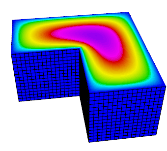 Example 1: Laplace Problem
This example code demonstrates the use of MFEM to define a simple isoparametric finite element discretization of the Laplace problem
with homogeneous Dirichlet boundary conditions. Specifically, we discretize with the FE space coming from the mesh (linear by default, quadratic for quadratic curvilinear mesh, NURBS for NURBS mesh, etc.)
The example highlights the use of mesh refinement, finite element grid functions, as well as linear and bilinear forms corresponding to the left-hand side and right-hand side of the discrete linear system. We also cover the explicit elimination of boundary conditions on all boundary edges, and the optional connection to the
GLVis tool for visualization.
The example has a serial (ex1.cpp) and a parallel (ex1p.cpp) version.
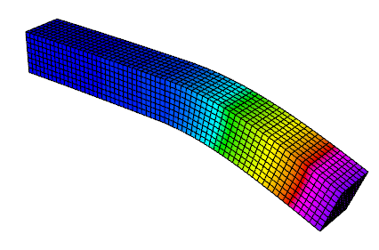 Example 2: Linear Elasticity
This example code solves a simple linear elasticity problem describing a multi-material cantilever beam. Specifically, we approximate the weak form of
where
is the stress tensor corresponding to displacement field , and and are the material Lame constants. The boundary conditions are on the fixed part of the boundary with attribute 1, and on the remainder with being a constant pull down vector on boundary elements with attribute 2, and zero otherwise. The geometry of the domain is assumed to be as follows:
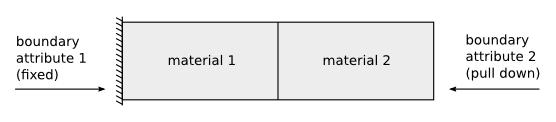
The example demonstrates the use of high-order and NURBS vector finite element spaces with the linear elasticity bilinear form, meshes with curved elements, and the definition of piece-wise constant and vector coefficient objects.
The example has a serial (ex2.cpp) and a parallel (ex2p.cpp) version. We recommend viewing Example 1 before viewing this example.
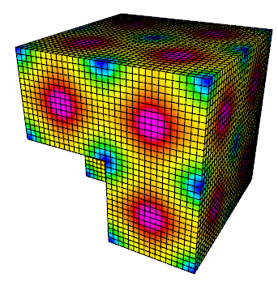 Example 3: Definite Maxwell Problem
This example code solves a simple 3D electromagnetic diffusion problem corresponding to the second order definite Maxwell equation
with boundary condition = "given tangential field". Here, we use a given exact solution and compute the corresponding r.h.s. . We discretize with Nedelec finite elements.
The example demonstrates the use of finite element spaces with the curl-curl and the (vector finite element) mass bilinear form, as well as the computation of discretization error when the exact solution is known.
The example has a serial (ex3.cpp) and a parallel (ex3p.cpp) version. We recommend viewing examples 1-2 before viewing this example.
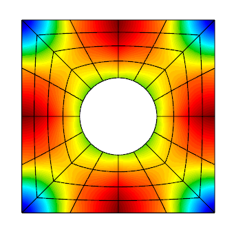 Example 4: grad-div Problem
This example code solves a simple 2D/3D diffusion problem corresponding to the second order definite equation
with boundary condition = "given normal field". Here, we use a given exact solution  and compute the corresponding r.h.s. . We discretize with the Raviart-Thomas finite elements.
and compute the corresponding r.h.s. . We discretize with the Raviart-Thomas finite elements.
The example demonstrates the use of finite element spaces with the grad-div and vector finite element mass bilinear form, as well as the computation of discretization error when the exact solution is known.
The example has a serial (ex4.cpp) and a parallel (ex4p.cpp) version. We recommend viewing examples 1-3 before viewing this example.
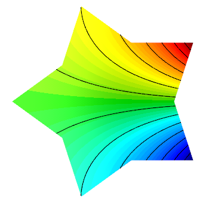 Example 5: Darcy Problem
This example code solves a simple 2D/3D mixed Darcy problem corresponding to the saddle point system
with natural boundary condition = "given pressure". Here, we use a given exact solution and compute the corresponding r.h.s. . We discretize with Raviart-Thomas finite elements (velocity  ) and piecewise discontinuous polynomials (pressure ).
) and piecewise discontinuous polynomials (pressure ).
The example demonstrates the use of the BlockMatrix and BlockOperator classes, as well as the collective saving of several grid functions in a
VisIt visualization format.
The example has a serial (ex5.cpp) and a parallel (ex5p.cpp) version. We recommend viewing examples 1-4 before viewing this example.
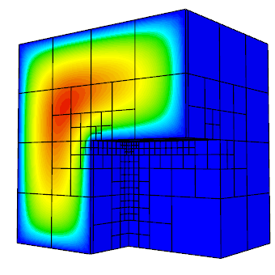 Example 6: Laplace Problem with AMR
This is a version of Example 1 with a simple adaptive mesh refinement loop. The problem being solved is again the Laplace equation
with homogeneous Dirichlet boundary conditions. The problem is solved on a sequence of meshes which are locally refined in a conforming (triangles, tetrahedrons) or non-conforming (quadrilateral, hexahedrons) manner according to a simple ZZ error estimator.
The example demonstrates MFEM's capability to work with both conforming and nonconforming refinements, in 2D and 3D, on linear, curved and surface meshes. Interpolation of functions from coarse to fine meshes, as well as persistent
GLVis visualization are also illustrated.
The example currently has only a serial version (ex6.cpp). We recommend viewing Example 1 before viewing this example.
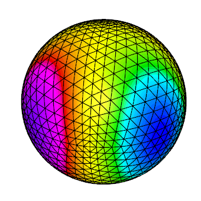 Example 7: Surface Meshes
This example code demonstrates the use of MFEM to define a triangulation of a unit sphere and a simple isoparametric finite element discretization of the Laplace problem with mass term,
The example highlights mesh generation, the use of mesh refinement, high-order meshes and finite elements, as well as surface-based linear and bilinear forms corresponding to the left-hand side and right-hand side of the discrete linear system.
The example has a serial (ex7.cpp) and a parallel (ex7p.cpp) version. We recommend viewing Example 1 before viewing this example.
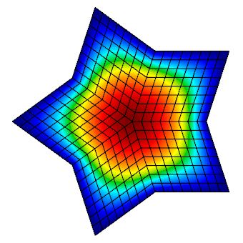 Example 8: DPG for the Laplace Problem
This example code demonstrates the use of the Discontinuous Petrov-Galerkin (DPG) method in its primal 2x2 block form as a simple finite element discretization of the Laplace problem
with homogeneous Dirichlet boundary conditions. We use high-order continuous trial space, a high-order interfacial (trace) space, and a high-order discontinuous test space defining a local dual ( ) norm.
The example highlights the use of interfacial (trace) finite elements and spaces, trace face integrators and the definition of block operators and preconditioners.
The example has a serial (ex8.cpp) and a parallel (ex8p.cpp) version. We recommend viewing examples 1-5 before viewing this example.
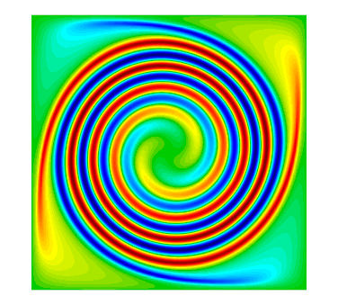 Example 9: DG Advection
This example code solves the time-dependent advection equation
where is a given fluid velocity, and is a given initial condition.
The example demonstrates the use of Discontinuous Galerkin (DG) bilinear forms in MFEM (face integrators), the use of explicit ODE time integrators, the definition of periodic boundary conditions through periodic meshes, as well as the use of
GLVis for persistent visualization of a time-evolving solution. The saving of time-dependent data files for external visualization with
VisIt is also illustrated.
The example has a serial (ex9.cpp) and a parallel (ex9p.cpp) version.
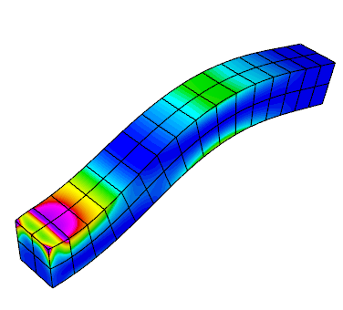 Example 10: Nonlinear Elasticity
This examples solves a time dependent nonlinear elasticity problem of the form
where is a hyperelastic model and is a viscosity operator of Laplacian type. The geometry of the domain is assumed to be as follows:
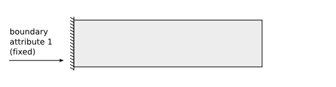
The example demonstrates the use of nonlinear operators, as well as their implicit time integration using a Newton method for solving an associated reduced backward-Euler type nonlinear equation. Each Newton step requires the inversion of a Jacobian matrix, which is done through a (preconditioned) inner solver.
The example has a serial (ex10.cpp) and a parallel (ex10p.cpp) version. We recommend viewing examples 2 and 9 before viewing this example.
No examples match your criteria.